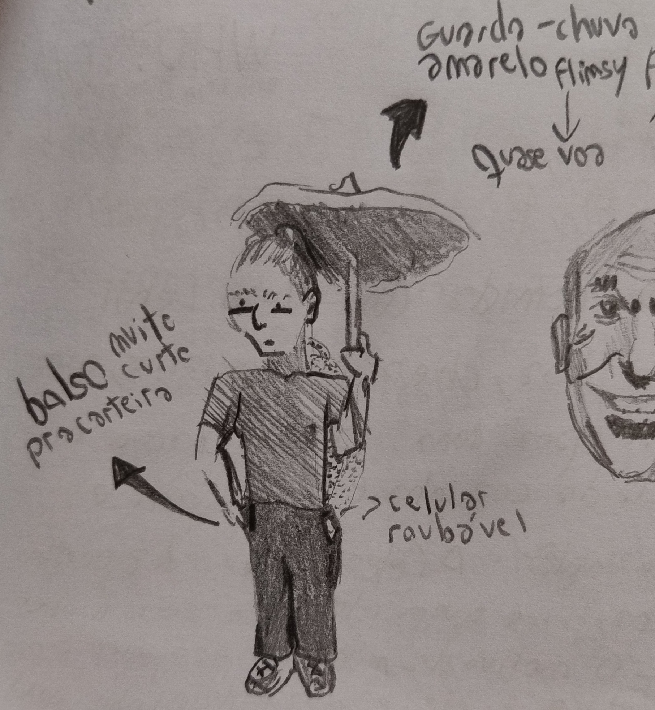
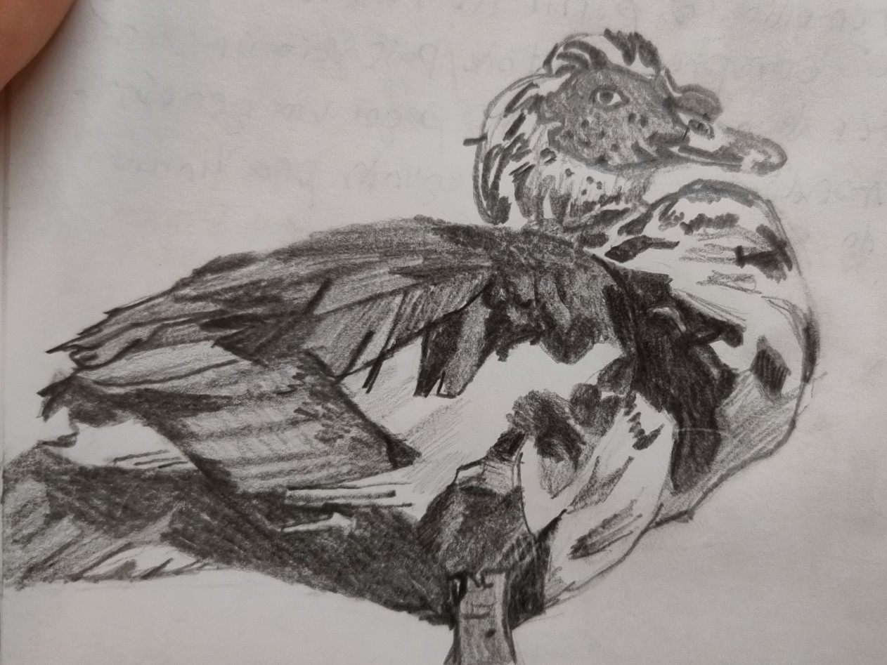

<!DOCTYPE html>
<html>

<style>
    .daddy {
        position: relative;
    }

    .my-child1 {
        position: absolute;
        left: 0px;
        top: 0px;
    }

    .my-child2 {
        position: absolute;
        left: 180px;
        top: 37px;
    }

    .my-child3 {
        position: absolute;
        left: 0px;
        top: 263px;
    }

    .my-child4 {
        position: absolute;
        left: 180px;
        top: 263px;
    }

    .float-left {
        float: left;
    }

</style>

<!--Aqui embaixo é absolute com a página toda sendo o relative-->

<!--
<body class="daddy">
    <div class="my-child1">
        
    </div>
    <div class="my-child2">
        
    </div>
    <div class="my-child3">
        
    </div>
    <div class="my-child4">
        
    </div>
</body>
-->


<!--Aqui embaixo é float left (do tipo, deixa o próximo amigo encostar ao lado direito)
MENTIRA. Na verdade é sem float pois não precisa pra imagem, só pra divs com tamanho definido,
pois eles entram no automatico na linha de baixo, não na direita-->

<!--<body class="float-left">-->


<br>


</body>

</html>